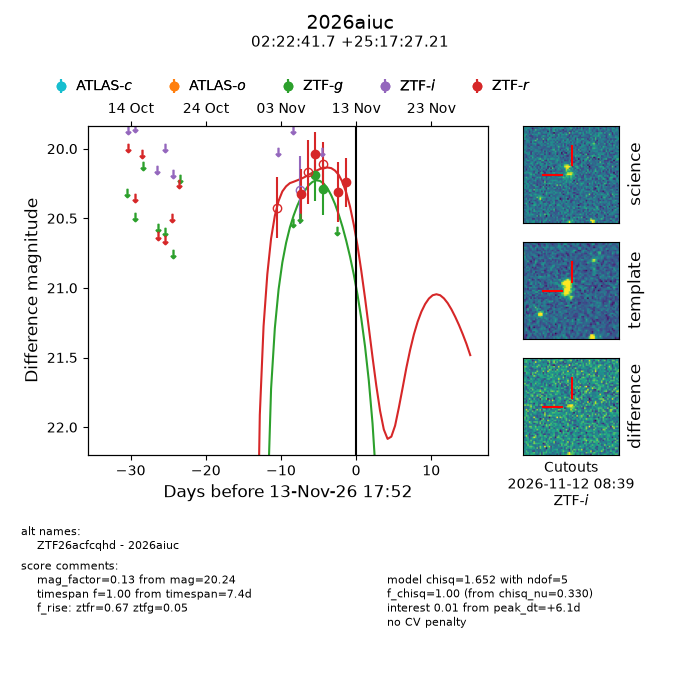
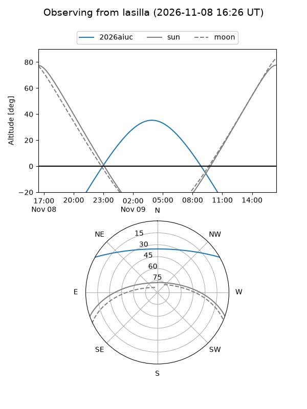
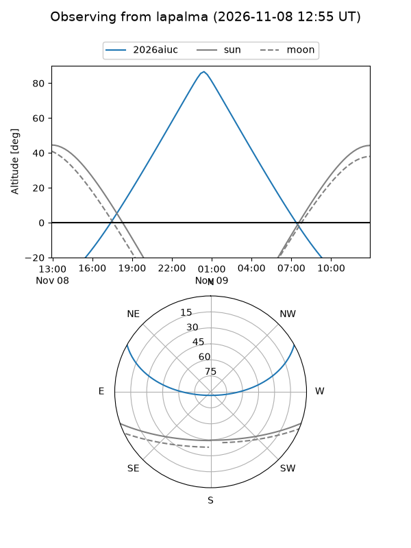
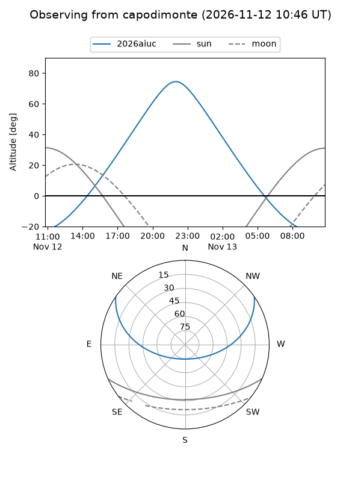
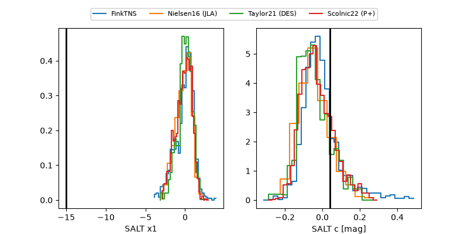

2026aiuc
Target 2026aiuc at 2026-11-13 17:58
Aliases and brokers:
FINK-ZTF: ztf.fink-portal.org/ZTF26acfcqhd
Lasair-ZTF: lasair-ztf.lsst.ac.uk/objects/ZTF26acfcqhd
ALeRCE-ZTF: alerce.online/object/ZTF26acfcqhd
YSE-PZ: ziggy.ucolick.org/yse/transient_detail/2026aiuc
TNS name: wis-tns.org/object/2026aiuc
Direct TNS query: direct search
alt names
ZTF26acfcqhd (ztf,fink_ztf)
2026aiuc (tns,yse)
Coordinates:
equatorial (ra, dec) = 35.6738,+25.29089
equatorial (HMS+DMS) = 02:22:41.71,+25:17:27.21
galactic (l, b) = (147.6885,-33.15645)
Flags:
peak dt: +6.1
Photometry:
last ztfg=20.29, ztfr=20.24
2 ztfg, 4 ztfr detections
Lightcurve

Visibility



Additional plots
